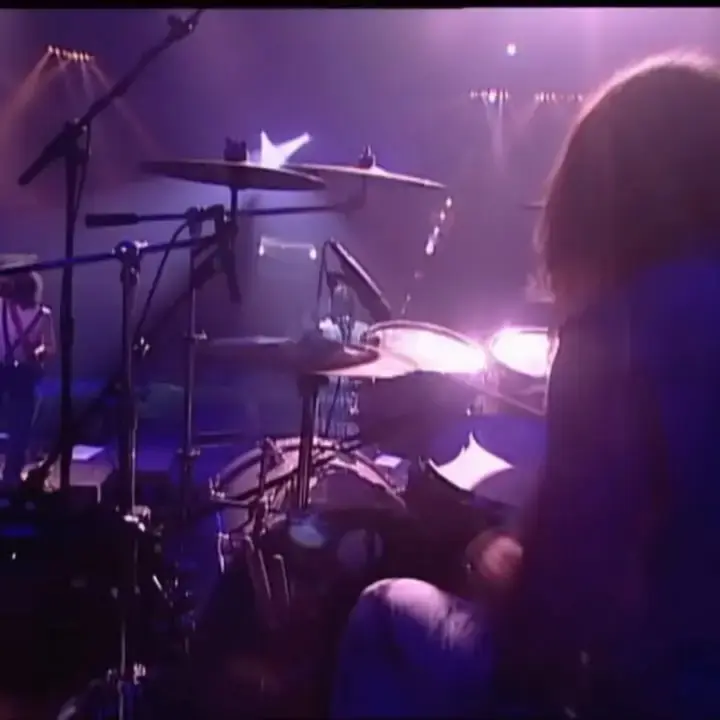
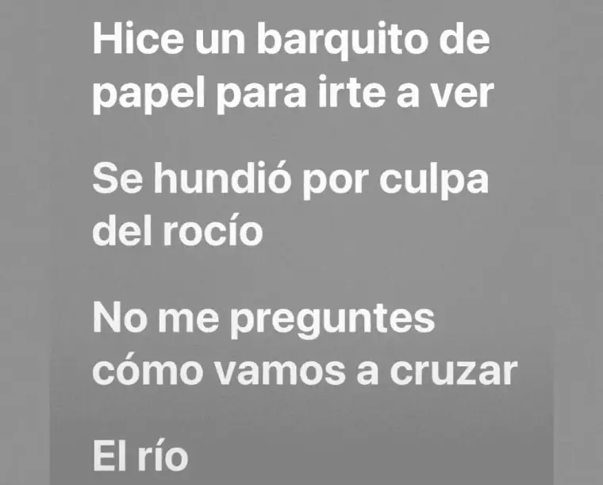
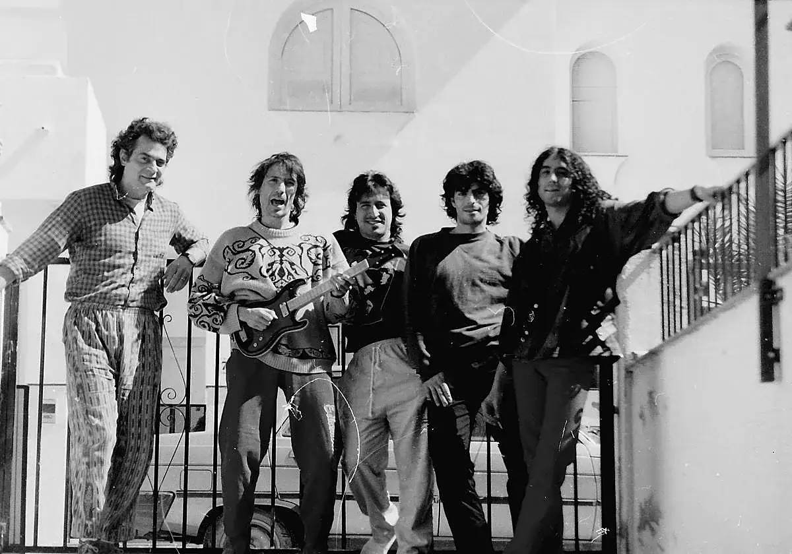
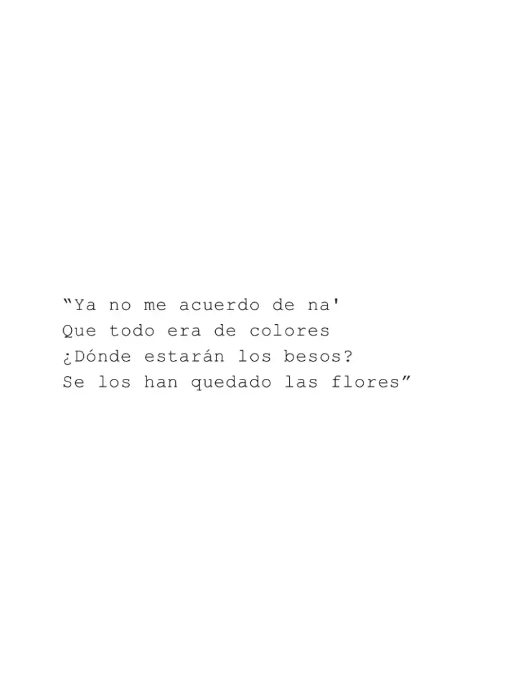
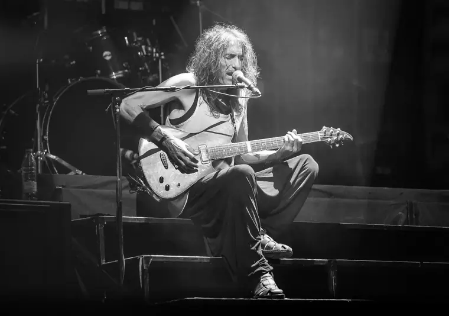

Journal / 16 de diciembre de 2025
Robe & Extremoduro
Frente a un mundo de filtros y marketing vacío— la reivindicación de la verdad desnuda.




Frente a un mundo de filtros y marketing vacío, la reivindicación de la verdad desnuda. Analizar a Robe es entender que el camino se inventa a cada paso, y que ser transparente —aceptando nuestra propia "materia defectuosa"— es la única forma de caminar con orgullo (o al menos empezar).
— varix.
(Adrián)
Siempre había oído algo de su música, pero nunca habría sabido decirte el nombre de una canción si me la ponías a escuchar. Todo cambió este año, cuando alguno de ustedes me abrió el camino para escuchar “Yo, minoría absoluta”. Desde el primer momento, al ver la portada, supe que lo que iba a escuchar iba a ser especial y diferente.
Desde su partida volví a recorrer su discografía, especialmente su trabajo en solitario, y qué pena haberme perdido durante tanto tiempo música tan buena. Pero nunca es tarde para apreciar a un gran artista y poeta de la música en español. Acabo de terminar Material Defectuoso y qué obra de arte!
Gracias a los que me enviaron su música este año 🤍
By Urban

LA LEY INNATA — No está escrita, nació con nosotros.
Existe una ley que no nos han enseñado; no la hemos leído ni heredado, sino que de la misma naturaleza la hemos agarrado. Una ley para la que no hemos sido educados, sino hechos; en la que no hemos sido instruidos, sino empapados.
Hay obras que no se escuchan, se habitan.
Es el pulso del instinto: ese impulso salvaje que nos obliga a movernos, a amar sin permiso o a reducirlo todo a cenizas para volver a empezar. Es el Derecho a ser uno mismo; el viaje hacia ese rincón de nuestra mente que nadie ha podido domesticar.
Esta obra es una sola canción dividida en movimientos porque la vida no sabe descansar. Es una cadencia continua donde el sueño colisiona con el ruido, y el estruendo del mundo solo se acalla ante el peso de la verdad. Es el pulso que nos dicta cuándo retirarnos, cuándo amar.
“Hice un barquito de papel para irte a ver... Se hundió por culpa del rocío…
No me preguntes cómo vamos a cruzar... El río”.
Y, sin embargo, decidimos nadar. El amor no es un puerto seguro, es el riesgo de la vulnerabilidad absoluta. Tan frágiles que hasta el peso de nuestras propias lágrimas nos puede derrotar.
"Sin ser, ni oir, ni dar"
Ya no quedan palabras que decir ni frecuencias que captar. Un vacío que solo se interrumpe por la urgencia del que busca, desesperadamente, conectar: “Y a cobro revertido quisiera estar contigo y así sintonizar”.
La Ley Innata es ese refugio donde el rock trasciende la rebeldía para convertirse en humanidad. Nos recuerda que una herida abierta no es una derrota, sino un lugar donde sanar.
Es el sonido del amor en su estado más puro — Una dulce introducción al caos. El sueño, la realidad. Nuestra Ley Innata, que en su estado más puro se convierte en calma — libertad.
— varix.
(Adrián)
Mi álbum favorito de Robe & Extremoduro. Qué tesoro su escuchar.
Continúa leyendo, o viendo, o escuchando...
Y sigue explorando en @weloveurban.


